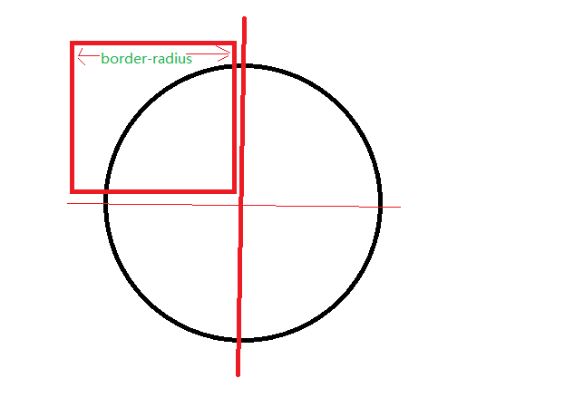

首先说下border-radius的兼容性吧，IE9以及以上都支持了，其他的基本也都支持了，可以说是可以放心大胆的使用了，至于移动端更不用担心，目前就Opera Mini不支持以外基本都支持了。 这个属性对于前端美化方面应用是非常广的，也是必须要掌握的一个属性。
使用上主要有下面三种形式：
border-radius: length|% (可以设置宽度／百分比);
border-radius: 1-4 length|% (四个角：左上，右上，右下，左下 即顺时针方向);
border-radius: 1-4 length|% / 1-4 length|%(水平方向／垂直方向);
如果只需要设置一个角度的或者只设置一个角的可以这样设置：
border-top-left-radius: 10px;（左上）
border-top-right-radius: 10px;（右上）
border-bottom-right-radius: 10px;（右下）
border-bottom-left-radius: 10px;（左下）
需要注意的是：
1.当任意两个相邻圆角的半径之和大于border box的尺寸时，用户代理必须按比例减少各个半径所使用的值，直到他们不会重叠
2.大值特性：值很大的时候，只会使用能够渲染的圆角大小渲染
3.等比例特性：水平半径和垂直半径比例恒定不变
下面具体给几个常用的样例：
border-radius属性值的大小也就是圆角所在圆的半径,也就是说如果设置一个长宽相等的元素的border-radius属性值为该元素的宽或者长，那么这个元素展示就是以长或者宽为半径的圆的四分之一，但是元素所占位置还是长*宽的区域面积，如下图所示：
